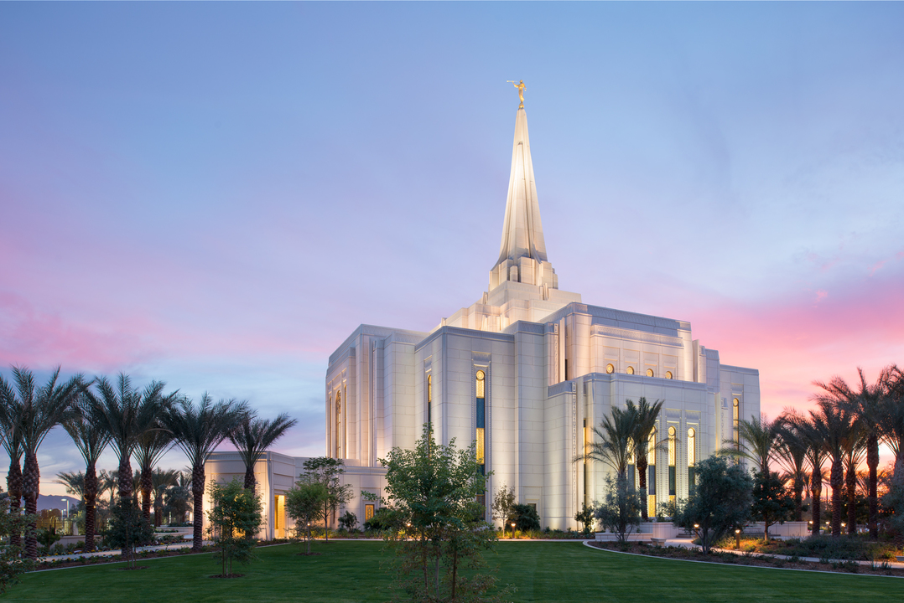

Temples of The Church of Jesus Christ of Latter-day Saints

Temples are considered houses of the Lord and are distinct from regular meetinghouses or chapels.Temples are considered houses of the Lord and are distinct from regular meetinghouses or chapels.Temples are considered houses of the Lord and are distinct from regular meetinghouses or chapels.Temples are considered houses of the Lord and are distinct from regular meetinghouses or chapels.Temples are considered houses of the Lord and are distinct from regular meetinghouses or chapels.Temples are considered houses of the Lord and are distinct from regular meetinghouses or chapels.Temples are considered houses of the Lord and are distinct from regular meetinghouses or chapels.Temples are considered houses of the Lord and are distinct from regular meetinghouses or chapels.Temples are considered houses of the Lord and are distinct from regular meetinghouses or chapels.